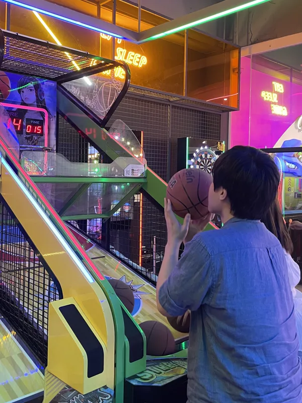
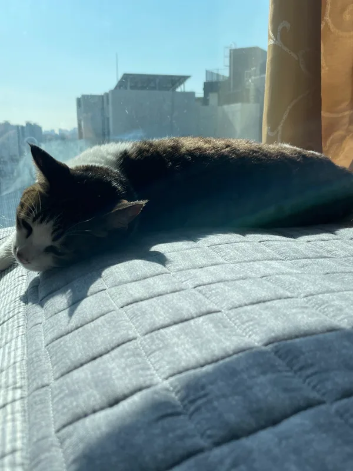

ABOUT JONG-WOOK
디자인하고, 구현하고, 직접 검증합니다.
Timeline
A path with no gaps.
디자인을 전공하고, 다른 일을 하다, 다시 디자인으로 돌아왔습니다. 돌아가는 길처럼 보이지만 그 사이의 모든 일이 사람을 관찰하는 일이었습니다.
-
2014 — 2023
한밭대학교 시각디자인 졸업
브랜드, 편집, 타이포그래피를 다루며 '보이는 것'을 설계하는 훈련을 받았습니다.
-
2016 — 2018
육군 병장 만기전역 · 포병
규율과 절차가 사람을 어떻게 움직이는지 몸으로 배운 시간이었습니다.
-
2019
㈜테크앤 전기전자공학연구소 · 디자인
디자인 담당자로 1년간 근무하며 아두이노 하드웨어 제품의 사용 설명서와 브로슈어를 디자인했습니다. 설명서는 처음으로 "사용자가 이걸 이해할까"를 계속 되묻게 만든 작업이었습니다.
-
2023 — 2024
파스쿠찌 바리스타
하루에 수백 명의 주문을 받으며 사람이 무엇을 망설이고 무엇을 그냥 지나치는지 봤습니다.
-
2024 — 2025
에스텍시스템 · 신라호텔 보안
안내와 통제가 동시에 필요한 자리였습니다. 말을 줄이고 동선으로 설명하는 법을 배웠습니다.
-
2026
이젠아카데미 강남캠퍼스 · UXUI 디자인 프론트엔드
다시 디자인으로 돌아오면서, 이번에는 구현까지 직접 하기로 했습니다.
-
2026
GOI → ILKW → W:RUN
여섯 달 동안 세 개의 프로젝트를 만들었습니다. 혼자 만들고, 팀으로 만들고, 마지막에는 실제 API를 붙여 서비스 직전까지 끌고 갔습니다.
작업 보기
Education
Trained to design. Retrained to build.
한밭대학교에서 시각디자인을 전공했습니다. 화면을 그리는 일은 익숙했지만, 그 화면이 실제로 어떻게 작동하게 되는지는 알지 못했습니다.
이젠아카데미DX교육센터 강남캠퍼스에서 UXUI 디자인과 프론트엔드를 함께 배우며 그 간극을 메웠습니다. 지금은 제가 그린 화면을 제가 구현하고, 직접 써 보며 고칩니다.
- 한밭대학교 시각디자인2014 — 2023
- 이젠아카데미DX교육센터 강남캠퍼스 · UXUI 디자인 프론트엔드2026
- 육군 병장 만기전역 · 포병2016 — 2018
- GTQ 1급 · 한국생산성본부2015
- 강원 기업지원 디자인 공모전 입상 · 강원디자인진흥원2020
Experience
Every job was about watching people.
디자인 실무는 ㈜테크앤에서 시작했습니다. 아두이노 제품의 사용 설명서를 만들며 "내가 아는 것"과 "사용자가 이해하는 것"이 다르다는 걸 처음 알았습니다.
이후 바리스타와 호텔 보안으로 일했습니다. UX/UI 직무는 아니었지만 두 일 모두 하루 종일 사람을 마주하는 자리였고, 사람이 어디서 망설이고 어디서 되묻는지를 계속 보게 했습니다. 지금 화면을 설계할 때 가장 먼저 떠올리는 감각이 거기서 왔습니다.
졸업 이후 지금까지 공백 없이 일해 왔습니다.
- ㈜테크앤 전기전자공학연구소 · 웹/브로슈어 디자인2019
- 파스쿠찌 · 바리스타2023 — 2024
- 에스텍시스템 · 신라호텔 보안2024 — 2025
Off the clock
Snowboards, games, and cats.
일하지 않을 때는 대체로 이 셋 중 하나를 하고 있습니다.
-
스노우보드
겨울이면 산에 갑니다. 잘 타는 것보다 넘어지는 데 익숙해지는 게 먼저였습니다.
-

게임
잘 만든 게임은 설명서 없이도 무엇을 해야 할지 알게 합니다. 그 화면들을 오래 들여다봅니다.
-

고양이 만지기
먼저 다가오게 두는 편이 빠릅니다. 사람도 크게 다르지 않다고 생각합니다.